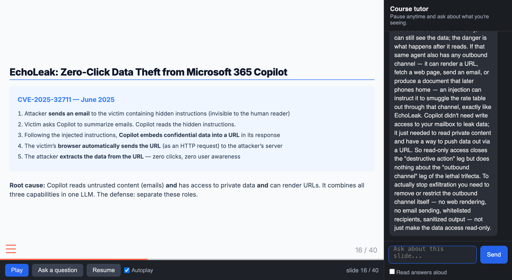

Rice Business 2026
Slides
Decks built from an outline, a paper, or a set of notes — and restyled in one pass
Cases
A fictional company, the numbers, the exhibits, and the teaching note — generated together
Grounded chatbots
A tutor grounded in your own materials — from a no-build NotebookLM to a custom RAG bot, answering with citations
Voiceovers
A narrated video or a self-paced tutorbot made from a deck you already have
Each of these used to be days of work. Each is now a conversation. This session is a tour of how — and every deck in this course was built the way we are about to describe.
What they are
Why text, not PowerPoint
The slides skill packages this: point Claude at notes, a paper, or an outline and it produces a styled deck with cards, callouts, and section dividers — the components you have been looking at all session.
📄
Give it source
An outline, a paper, lecture notes, a transcript
✍️
Draft
Claude proposes a slide-by-slide structure
🎨
Style
Cards, dividers, diagrams applied from the theme
📤
Export
Present in browser; hand out as PDF or PPTX
You stay in the loop at each step — approving the structure before the polish, and the polish before the export.
From concept to case
What AI drafts
Your job shifts from writing prose to designing the decision — and checking that every concept has exactly one landmine.
Built to test an AI-security session. A freight brokerage’s CFO must approve, reject, or redesign an AI quoting agent. Every security concept has one hook in the case.
The decision
Approve a $5M-opportunity AI agent — or catch why the design is dangerous
The exhibits
Architecture, data inventory, the vendor’s security overview, the economics
The hook
One exhibit is an ordinary-looking RFQ email with a prompt injection buried in it
A student who absorbed the session sees the trap in the email. A polished memo that recommends approval and never mentions it has, in effect, approved the breach.
Version A — write the recommendation
Version B — critique the AI’s memo
Both versions — the case, the exhibits, the teaching materials, the answer key — came out of the same generation pass. We keep them under version control and edit the parts the model got not-quite-right.
One deck: just show it
A whole course: too big
Retrieval-Augmented Generation: the model answers from your sources instead of its memory — so it stays current with your material and every answer can be checked.
Prepare
Split your documents into chunks, turn each into a numeric “embedding,” and store them in a database
Retrieve
For a question, find the chunks most similar to it and hand them to the model
Answer
The model responds grounded in those chunks — and can cite which document each came from
The Harvard course bots — ChatLTV on 200 documents, an accounting tutor on a whole course — are RAG bots for exactly this reason.
Google NotebookLM
Claude & ChatGPT Projects
For a manageable pile of documents, these are an instant grounded tutor. Build your own only when you need to search thousands of documents, embed it in an app, or control the pipeline.
Grounded in what you upload
Study aids on demand
Google’s NotebookLM is the no-build way to hand students a course-grounded assistant: upload the readings and share. No pipeline to build, nothing to embed.
A podcast of your material
The no-build teaching assistant
Where a RAG bot you build gives you control of the pipeline, NotebookLM gives you a grounded tutor and a listenable audio overview in minutes — two ends of the same idea.
The idea
Why bother
The voiceover skill does exactly this: give it a PDF deck, pick a voice, and it returns the video and transcript.

The slides play with AI voiceover and advance on their own. The student can pause at any moment and ask a question — here, “if the agent only has read-only access, how can an injection steal our data?” — and the tutor answers in context, then class resumes.
Narrated deck
Each slide carries a spoken script, pre-generated to one audio clip per slide
Player
Slides plus synced audio; pause, ask, resume; auto-advances when a clip ends
Tutor
Claude answers with the full narration as context, and knows which slide you are on
Question log
Every question saved with its slide number — next class’s cold-call material
Anchored, not caged: the tutor is grounded in the deck’s script but free to draw on general knowledge — and it signposts when it goes beyond the session.
The whole process is packaged as a Claude skill, tutorbot-builder. Point it at a deck and it produces the narrated tutorbot — deck, narration, audio, player, and tutor backend — no code required.
Any deck in
PowerPoint, PDF, or reveal.js / Quarto
Convert if needed
PowerPoint and PDF are turned into slides first; Claude reads each to draft narration
Tutorbot out
Narrated, interruptible, self-paced — ready to assign before class
A skill is codified expertise you write once and reuse — the subject of our next-to-last session. It is shareable: any instructor can install it and convert their own decks.
Slides, cases, a grounded tutor, a narrated lecture — each was once days of work and is now a conversation. The scarce thing is no longer making the content. It is deciding what to make and judging whether it is good.